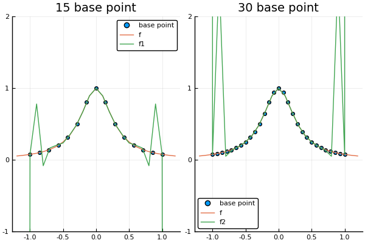

插值误差和龙格现象
插值误差
函数$y=f(x)$，从函数取$n$点，生成插值多项式$P(x)$，那么在$x_i$点的插值误差是$f(x_i)-P(x_i)$
插值误差公式
$f(x)-P(x) = \frac {(x-x_1)(x-x_2)···(x-x_n)}{n!}f^{(n)}(c)$
$c$在最小和最大的$n+1$个数字$x_1,x_2,···,x_n$之间
龙格现象
当插值点数量增加，等距离选取插值点会带来收敛困难的问题，这一困难被称为龙格现象。
龙格现象的主要特征是：多项式在插值区间的端点附近扭动
龙格函数例子
f(x) = 1/(1+12*x^2) # 龙格函数
nd = newton_difference_quotient
x_1 = -1:1/7:1
c_1 = nd(x_1, f.(x_1))
x_2 = -1:1/14:1
c_2 = nd(x_2, f.(x_2))
x = -1.2:0.1:1.2
s1 = scatter(x_1, f.(x_1), label="base point")
s2 = scatter(x_2, f.(x_2), label="base point")
plot(
plot!(s1, x, [f.(x) horner_rule(length(x_1)-1, c_1, x, x_1)], label=["f" "f1"], ylims = (-1,2), yticks=-1:1:2, title="15 base point"),
plot!(s2, x, [f.(x) horner_rule(length(x_2)-1, c_2, x, x_2)], label=["f" "f2"], ylims = (-1,2), yticks=-1:1:2, title="30 base point")
)可以看到在区间$[-1,1]$上多项式图像发生不同程度的扭动
